以系统思维
守护濒危灵长类
兰州大学生态学院动物翻译官-灵长类保护课题组，聚焦气候变化与人类活动耦合下的濒危物种保护，践行「科研—科普—智库」三位一体的保护生物学路径。
「我从来不曾优秀过，也从来不曾放弃过。」 —— 赵序茅 博士论文致谢 · 2021
三大研究方向
从预见性保护到差异性保护、再到系统性保护，课题组以科学问题为起点，以中国特有濒危灵长类为核心对象，以全球视野为参照，以政策转化为落脚点。
预见性保护
基于气候变化和人类活动耦合驱动，量化气候风险对灵长类适宜栖息地、连通性格局及保护空缺的动态影响，在威胁尚未完全显性化之前识别潜在高风险区域。
差异性保护
同一物种不同亚种、地理亚群在遗传结构、生态适应与受威胁程度上差异显著，通过种群水平的精细评估，推动保护策略从「一物种一策」细化为「一亚种种群一策」。
系统性保护
将系统发育信息纳入保护优先区识别，强调进化独特性与进化历史的保护维度，避免全球变化背景下进化历史的不可逆丧失。
最新成果 · Science Advances
课题组联合中科院动物研究所、中南林业科技大学，在全球顶级期刊发表灵长类气候变化风险研究。
Modeling the effects of climate risk on primates globally: new perspectives on conservation priorities
研究重建非人灵长类物种的系统发育关系，综合多指标因素系统探讨灵长类物种分布的时空模式，预测未来气候变化情景下的优先保护区域，为全球灵长类保护提供新的科学依据——将宏观生态学、进化生物学与保护生物学交叉融合，提升了优先保护区域识别的空间精度。
荣誉与认可
赵序茅教授以科普与科研并重，先后获得多项国家级与省部级荣誉。
团队成员
一支由保护生物学、生态学与进化生物学背景成员组成的跨学科研究团队。
课题组负责人
Principal Investigator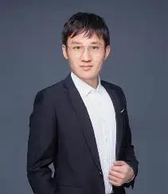
赵序茅 教授
生态学院 · 教授 · 博士研究生导师
从事保护生物学与生态文明相关研究，主要聚焦动物生态学、综合行为生态学、物种分布模型。主持国家自然科学基金项目 2 项，在国内外主流学术期刊发表文章 30 余篇，出版著作 39 部。兼任一带一路研究中心特聘教授、北京林业大学生态文明中心研究员、兰州大学科普部部长、兰州大学科学观测台站副主任。2021 年因博士论文致谢《我从来不曾优秀过，也从来不曾放弃过》在网络走红，个人经历与研究成果先后被人民日报、新华社、学习强国、CCTV 报道。
合作导师
Collaborators李明 研究员
中国科学院动物研究所动物生态与保护生物学重点实验室
灵长类生态学研究组组长，中国动物学会理事、兽类学分会秘书长，中国生态学会动物生态专业委员会副主任委员。长期从事灵长类生态学、行为学与保护生物学研究，与课题组联合开展全球灵长类气候变化风险等合作研究。
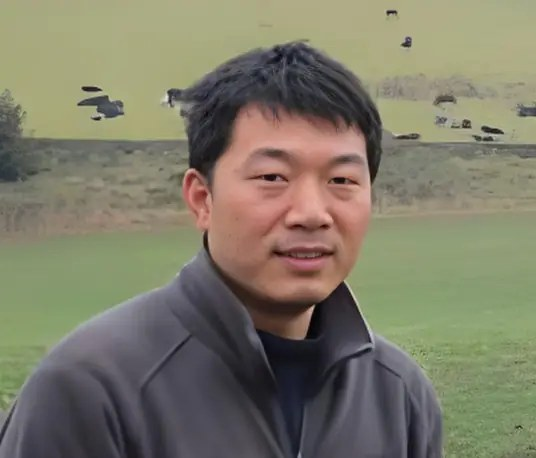
向左甫 教授
中南林业科技大学林学院
博士生导师，湖南省「芙蓉学者」特聘教授，世界自然保护联盟（IUCN）灵长类专家组成员。长期从事金丝猴（滇金丝猴、黔金丝猴、川金丝猴、怒江金丝猴）的行为生态与保护生物学研究，在神农架大龙潭等基地持续开展川金丝猴长期监测。
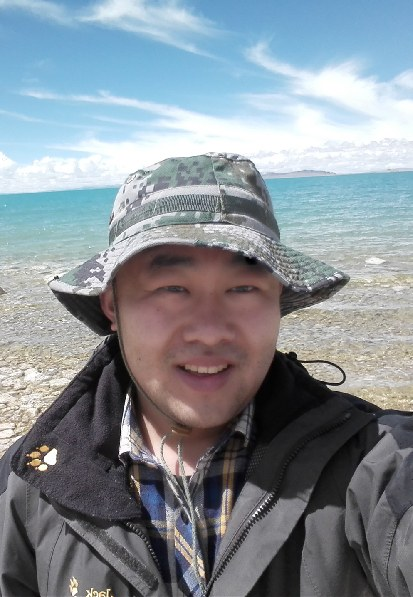
周炜帏 教授
兰州大学生态学院
硕士研究生导师。主要以两栖爬行动物为研究对象，围绕物种形成、区域生物多样性演化与适应性保护等科学问题开展研究，在 PNAS、Systematic Biology、Molecular Ecology 等国际期刊发表多篇论文。
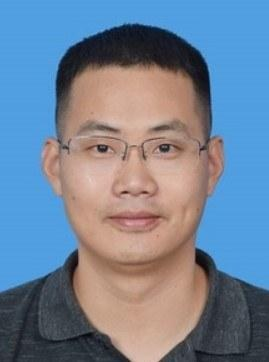
范鹏来 教授
广西师范大学生命科学学院
博士生导师。以白头叶猴、黑叶猴等珍稀濒危石山叶猴为主要研究对象，长期从事灵长类行为生态学、保护生物学与声音通讯研究，运用被动声学监测等技术探究灵长类声音信号的适应特征与信息传递功能。在 Science、Science Advances 等期刊发表论文 30 余篇，并担任多部自然纪录片的科学顾问。
杨立 副教授
中山大学生态学院
博士生导师。研究领域为濒危物种与生物多样性保护、系统保护规划，重点聚焦灵长类（以长臂猿为主），围绕「如何在复杂环境下实现保护绩效最大化」开展分布区动态及其驱动因素研究。
Paul A. Garber 教授
University of IllinoisUrbana-Champaign
国际知名灵长类行为生态学家，长期致力于灵长类社会行为、觅食生态与保护生物学研究，为课题组提供国际视野下的合作研究支持。
博士研究生
Ph.D. Students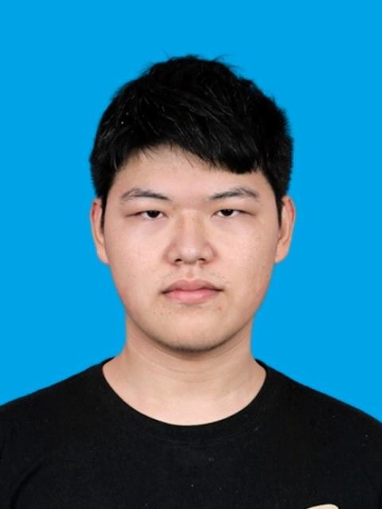
孙佳浩
张磊
科研助理
Research Assistant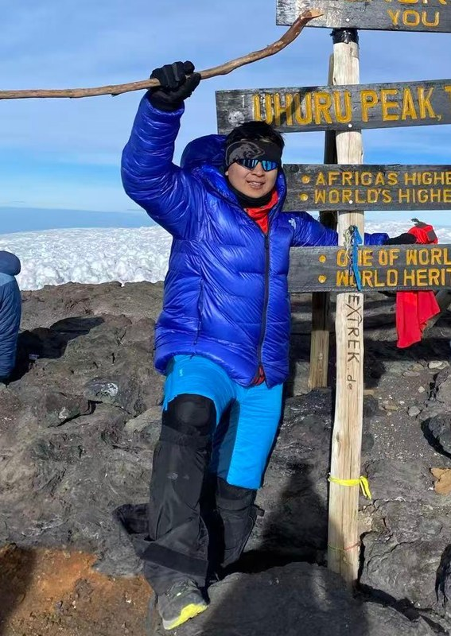
孙之昊
硕士研究生
M.Sc. Students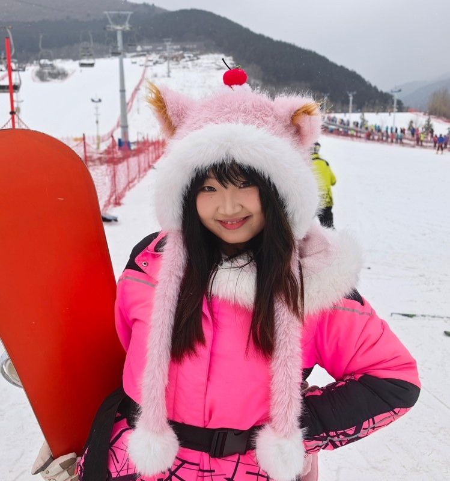
白璐
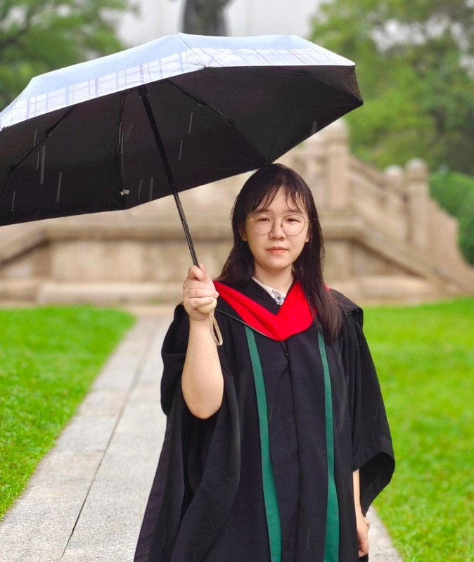
何炎瑾
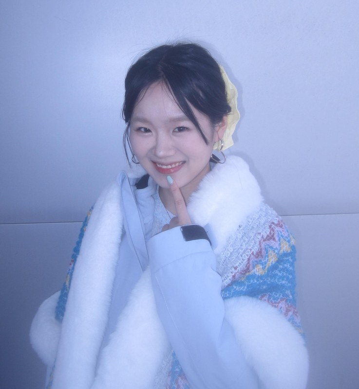
扈翠冉
刘清源
马睿恺
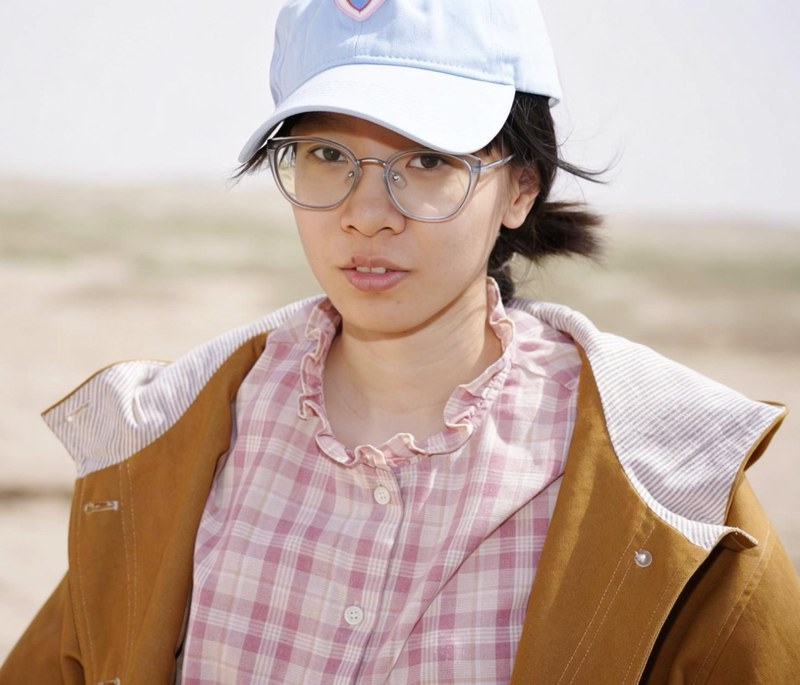
彭可佳
吴桐
发表论文
课题组在国内外主流学术期刊发表论文 30 余篇，以下为代表性成果。
Modeling the effects of climate risk on primates globally: new perspectives on conservation priorities
Climate and anthropogenic activities threaten two langur species irrespective of their range size
The impact of climate change and human activities over the past 2000 years has increased the spatial-temporal extinction rate of gibbons
Differential response to climate change and human activities in three lineages of Sichuan snub-nosed monkeys (Rhinopithecus roxellana)
Alleviating human poverty: A successful model promoting wildlife conservation in China
Investment in science can mitigate the negative impacts of land use on declining primate populations
Climate change, grazing, and collecting accelerate habitat contraction in an endangered primate
* 完整论文列表请参见兰州大学生态学院师资页面及 Google Scholar / ORCID。
项目成果
从科学研究到科普传播、再到智库建言，「科研—科普—智库」三位一体推动保护决策。
国家自然科学基金项目
主持国家自然科学基金项目 2 项，围绕气候变化与人类活动耦合下的濒危灵长类保护开展系统研究，产出一批具有国际影响力的保护生物学成果。
智库建言与政策转化
先后有 10 余份内参被中央和省级政府采纳，推动濒危物种保护决策的科学化与精细化，让保护生物学研究从论文走向政策现场。
科普著作（39 部）
将前沿保护科学转化为公众可理解、可参与的知识资源，先后获得中国好书奖、全国优秀科普图书奖、梁希科普一等奖，以科普推动保护行动力的转化。
科普教育与平台建设
作为兰州大学科普部部长，牵头建设「萃英生态科普教育基地」（获评中国生态学会生态科普教育基地），长期深入校园与基层开展野生动物与自然科学科普宣讲。
野外风采
从青藏高原到神农架，课题组的身影常年奔波于濒危灵长类的栖息地一线。
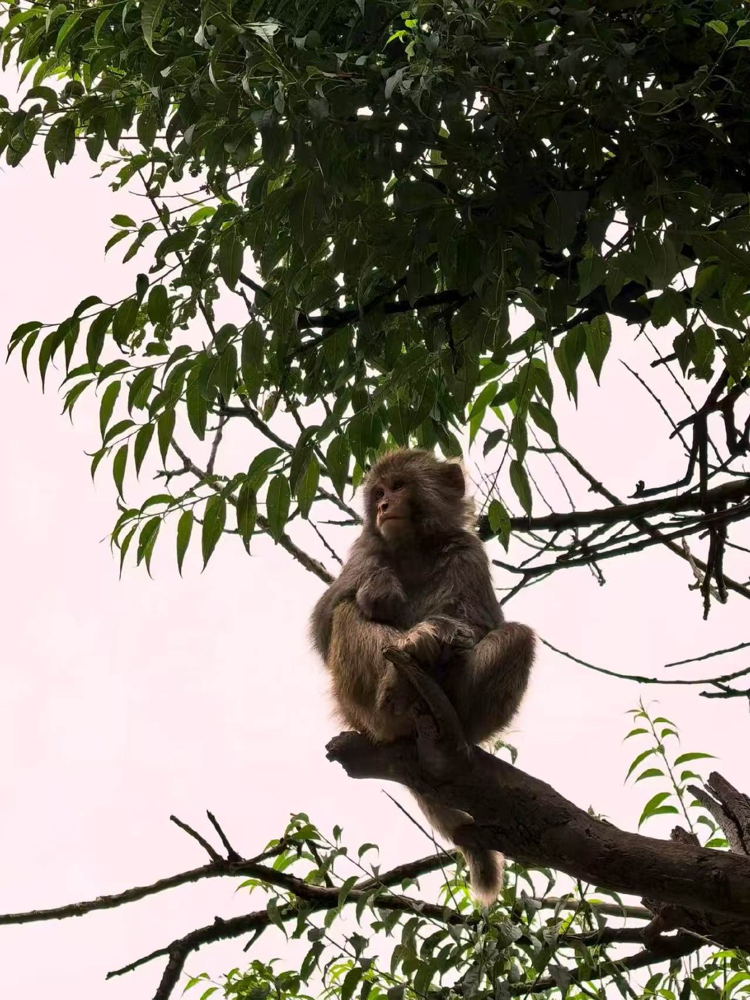
林间灵长类
野外栖息地记录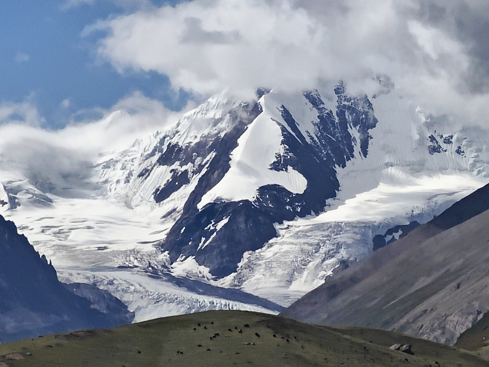
高原雪山冰川
高山草甸 · 野外科考沿线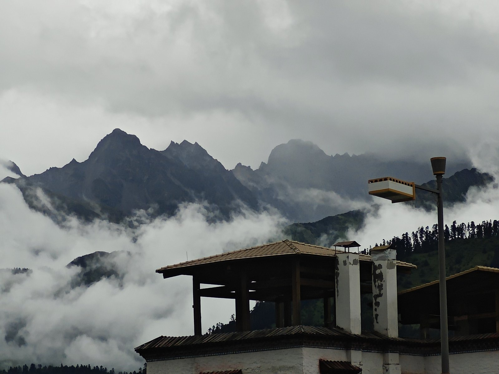
云雾山中的驻地
科考驻点掠影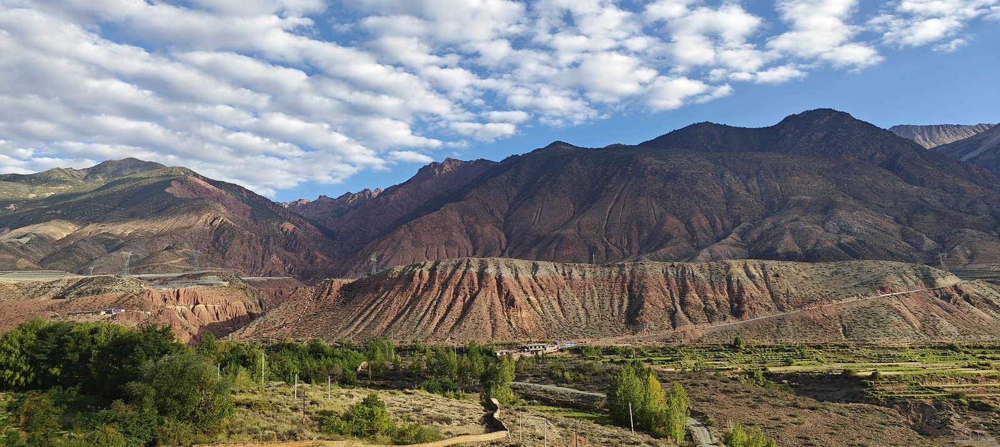
峡谷红层地貌
野外科考途中高原湖泊倒影
科考沿线风光高山湖泊小镇
高原科考沿线悬停暂停 · 图片为课题组野外科考与科普活动记录